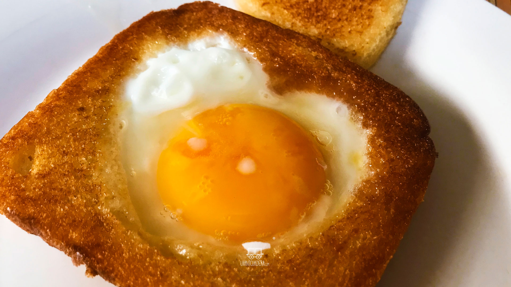

Huevito Estrellado GOD

Una de las mejores comidas del mundo, el huevito estrellado.
Para realizar este platillo se necesitan muy pocas cosas, la verdad es que se puede
hacer de diferentes maneras, pero les enseñaré a hacerlo de una de las maneras más
saludables que existen.
Ingredientes
- Huevo
- Mantequilla
- Especias (sal, pimienta y ajo en polvo)
- Pan de barra (opcional)
Preparación
- Calientas un poco de mantequilla en la sartén
- Le echas la cantidad de huevos que quieras a la sartén con cuidado de no romper la yema
- Añade sal, pimienta y ajo en polvo
- Tapas la sartén y esperas 2 minutos en fuego bajo
Clic aquí para regresar al recetario.